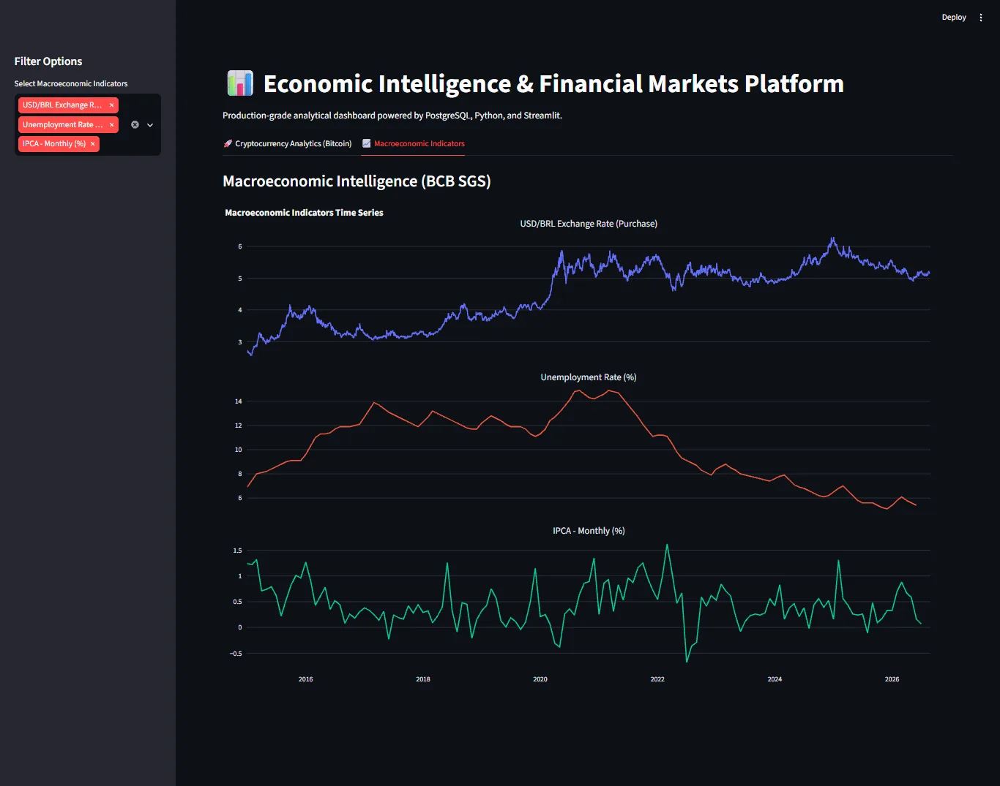

Economic data platform
ELT for Brazilian macro indicators and market data that never shows an empty or half-written table.
5quality checks every batch must pass before it may replace the Gold layer

- Decision it supports
- Deciding with economic indicators without fearing the dashboard is wrong.
- Who uses it
- Finance, treasury and planning teams that follow inflation, FX and rates.
- What an error costs
- An empty or wrong dashboard leads to a wrong decision, and nobody notices.
- How it creates value
- Every batch passes 5 checks before it goes in; if it fails, the dashboard keeps the last good data. Refreshes are atomic: never half done.
- Risks and limits
- The public dashboard reads a snapshot the CI refreshes monthly.
Problem
Public economic data sources fail in ordinary ways: rate limits, timeouts, empty answers, a changed format. A dashboard fed straight from them goes blank or shows wrong numbers unnoticed.
Solution
An ELT platform that pulls Banco Central do Brasil indicators and Yahoo Finance data with retries, checks every batch before it may replace the PostgreSQL Gold layer, writes it atomically and serves it on a dashboard.
How it works
- Range, null, duplicate, future-date and row-count checks on every batch.
- A failing batch is rejected and Gold keeps its previous data.
- A test proves on a real PostgreSQL that a failed insert rolls back the delete.
Results
| 5 | quality checks on every batch before it reaches Gold |
| 3 | attempts per step, with backoff on rate limits and timeouts |
| 1 | transaction per refresh: Gold is never empty |
Limits
The public dashboard reads a Gold snapshot that CI refreshes monthly.
Stack
PostgreSQL, Docker, GitHub Actions, Streamlit